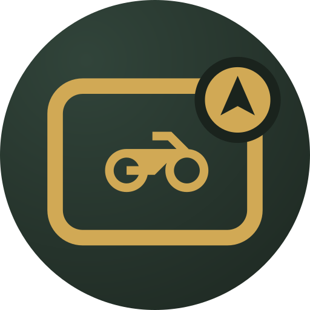
RideScreen AAGoogle Maps, Waze, Spotify and the Assistant on the bike's screen, connecting by itself when you start the bike. Plus: cheapest fuel nearby, your rides with records, videos with your speed overlaid and a watch app.
Free · no ads · open source · Android 10 or newer
Direct download of the latest version · also on GitHub · what’s new in v2.3
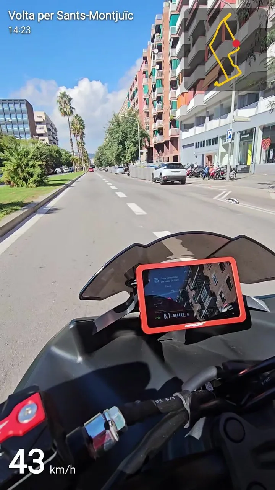
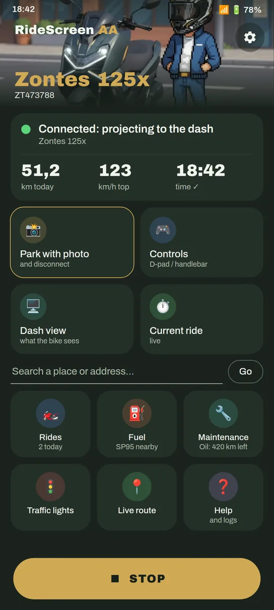
If your dash shows a QR code to connect your phone (MotoPlay / EasyConnect), almost certainly yes. The app is tested daily on a Zontes 125X, and it builds on OpenCfMoto, which works with many brands that use the same dash.
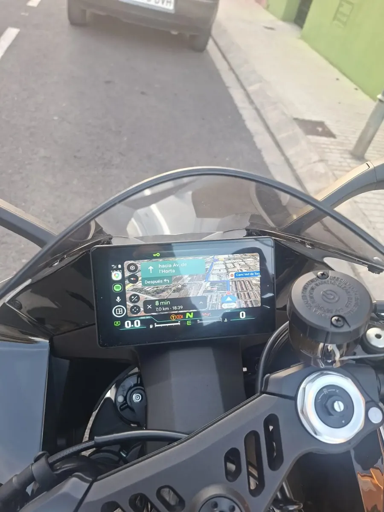
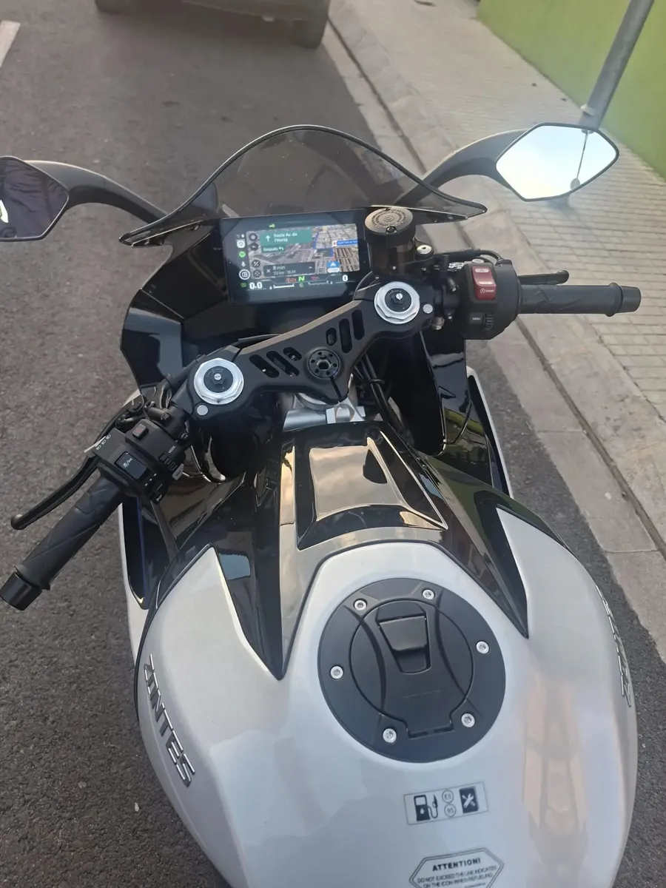
Start the bike and Android Auto appears on the dash, with your phone in your pocket.
Fit the image to your dash with arrows, watching the result live on the bike.
Talk to the Assistant from your intercom, watch or glasses.
Official 95 petrol prices near you, and Maps takes you there. Spain only.
Every ride is saved automatically: route by speed, heatmap, records and trophies.
Joins your clips (Ray-Ban Meta, action cam, phone) with map, speed and time overlaid.
Where you stop most, how long you wait, and which way is really faster.
Saves the spot and a photo; the watch compass leads you back to the bike.
Oil, belt, inspection… with a reminder when it's due, and your real fuel consumption.
Alarm on phone and watch and, if you don't respond, an SMS with your location.
ExperimentalVoltage and lock state, read from the keyless box. Read-only: it never sends commands.
New in 2.3One tap on your home screen connects to your bike, with your Garage photo.
New in 2.3Your passenger picks the destination and music and moves Android Auto from their phone.
New in 2.3Your ride is saved every 30 s even if the app closes. And you can import GPX routes.
New in 2.3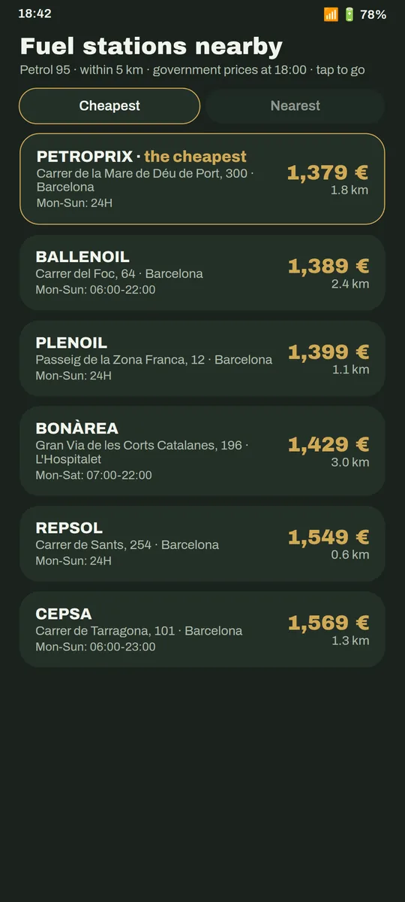
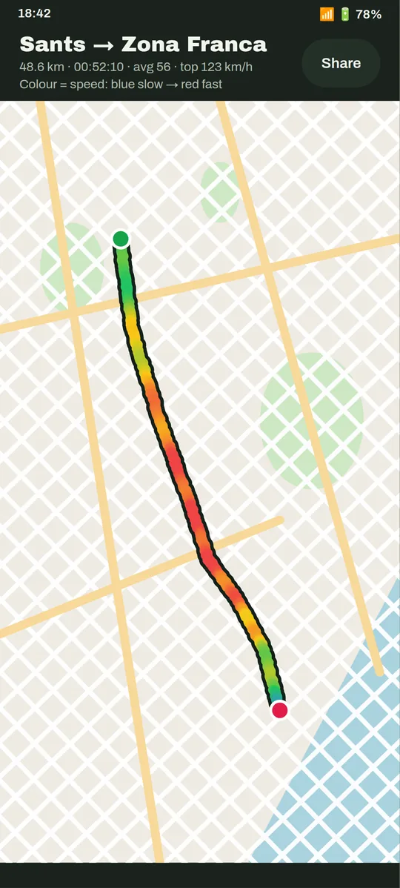
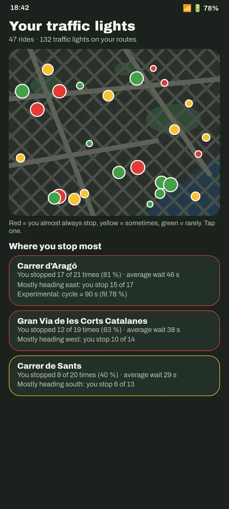
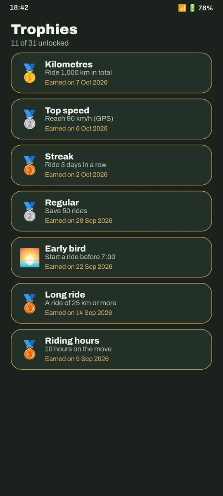
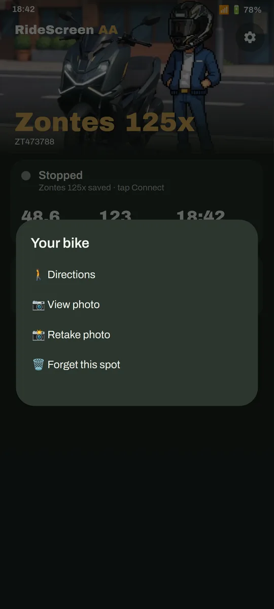
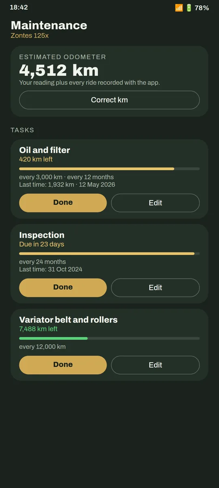
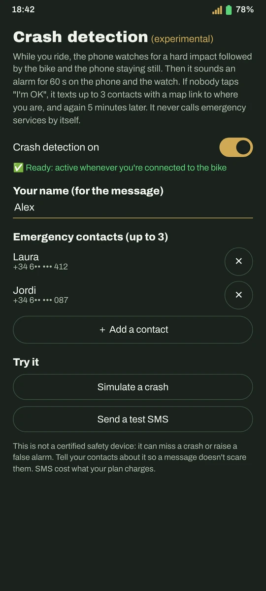
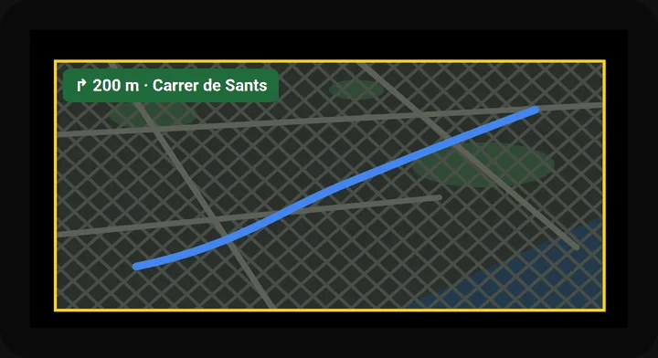
Fitting the picture, live on the dash
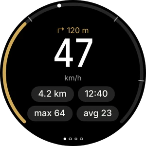
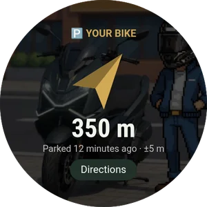
App for Wear OS watches · watch guide
With the button above, directly (or from GitHub). The app itself offers you later versions.
A one-time setting in Android Auto. The guide shows you how, with screenshots.
And tap Connect. From then on it connects by itself when you start the bike.
No. It's an independent project, made by a rider for his own Zontes and shared with the community. It is not affiliated with Zontes, CFMoto, Carbit or Google.
Nothing. It's free, with no ads or subscriptions, and the code is open (AGPL-3.0 licence). If you find it useful, you can buy me a coffee.
It's on its way. Meanwhile you download it from this site; if Play Protect warns you, it's because it doesn't know the app yet: More details → Install anyway.
Your rides, photos and settings stay on your phone: no accounts, no cloud. The app only sends anonymous error reports (nothing that identifies you) so we can fix them, and you can turn them off.
For maps, streaming music and fuel prices, yes, just like Android Auto in a car. The link to the bike uses the bike's own Wi‑Fi.
Check the guide, which covers the most common errors. If it persists, in the app: ❓ Help → Share logs, and send it telling us what happened.